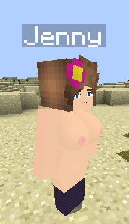
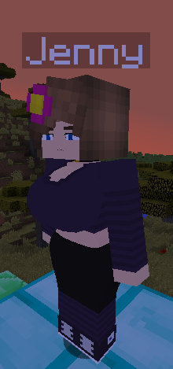
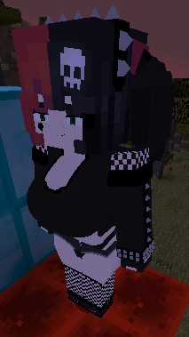
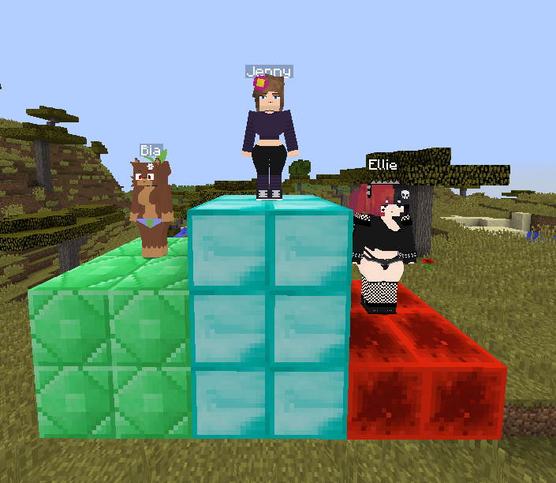

Welcome
Website hosted on GitHub
You are entering an 18+ section. If you're underage, please leave this page.
---------- Mods (by SchnurriTv) ----------
---------- How to install? ----------
1. Install Forge for Minecraft 1.12.2
2. Install the Sexmod
3. Install Optifine for 1.12.2 (optional)
4. Run the Forge .jar file and click "OK"
5. Press "Win + R", type "%appdata%", and hit Enter
6. Go to .minecraft/mods (create the folder if it doesn't exist) and move the mod files there
7. Launch Minecraft with the "Forge 1.12.2" profile
8. Most importantly: enjoy Jenny
---------- Mod origin ----------
The mod was created by SchnurriTv between 2020–2023. It was an unplanned but famous project.
Due to adult content, Mojang/Microsoft banned the mod under their EULA, making it inaccessible.
But I, Nerdola12, used tools like Wayback Machine to archive 4 versions and translated one into PT-BR.
⚠️ ATTENTION: most Jenny Mod sources are unofficial. This site archives versions extracted from original sources.
---------- Screenshots ----------



